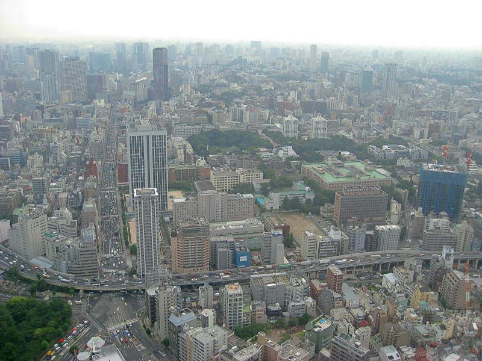

Here's our first view of Tokyo Tower. Sure enough, there's a Starbucks.
On the way in, we saw a temple right near the base of Tokyo Tower. You can see the tower poking out in the background.
Tokyo Tower is 332.6 meters tall. The big square platform in the center is the 150 meter observation deck, and you can go higher up to the circular 250 meter platform at the base of the needle.
This is one of many views of Tokyo from the tower. Lots of skyscrapers. All fairly neutral colors. How drab.
To spruce up the landscape, I took another picture with some vegetation.
Note the mist in the distance. It was actually fairly cloudy. The mist on this side of Tokyo Tower was fairly light, but it looked like dusk on the other side.

Some big highways in Tokyo. We didn't drive at all in Japan. People stay to the left instead of the right. It'd be really stupid for me to try to remember that.
Paul and a little Japanese boy immersed in the urban landscape.

There were transparent panels in the floor that you can stand on and see through, straight down, to the street. Fortunately they were sturdy.
Paul making a goofy face on the way up the tower from the lower observation deck to the higher ones..
The buildings in the distance almost look like headstones.
A traffic circle around a grassy field. Water in the distance.
A spattering of temples amongst the urban landscape.
One thing I notice about reflective surfaces on buildings. By definition, they fit in with their surroundings, at least by color. I was actually able to identify many of these buildings...

...using the building identification computer panel provided.
A temple with a funky roof, and a soccer field, amongst lots more office buildings.
A better look at the temple. It looks like there are two rings at the tip of the roof.
We had fun watching the soccer game from 250 meters up. I'm sure some of them were posing for this picture, but I can't tell.
Tokyo as dusk approaches. Or at least the dark clouds.
Here's more proof I was actually in Tokyo.
Paul was there too. It was tougher than you think to get these pictures to come out as well as they did.
The clouds made Tokyo look darker and darker, as if it was already nighttime. Buildings and cars started to flip on their lights. We waited for an amazing view of the sunset from Tokyo Tower. Because of the clouds, the this is the best we saw. A murky purple. I was still happy.
Eventually night actually fell.
While friends and I were joyriding around Tokyo, lots of people there were no doubt working late hours.
This is a cool night shot of that same distinctively shaped building you've seen in my other pictures.

A view of Tokyo Tower at night, as we were leaving.

On the way out we went back to that temple area. There was a festival going on! They had buffet tables and music. Apparently summer festivals are very common around Japan.
They dances in circles along with traditional music. The dancers in the smaller circle on the platform knew what they were doing, while everyone in the larger circle just followed their movements.
In the very center, a drummer kept a steady beat for everyone.
Back